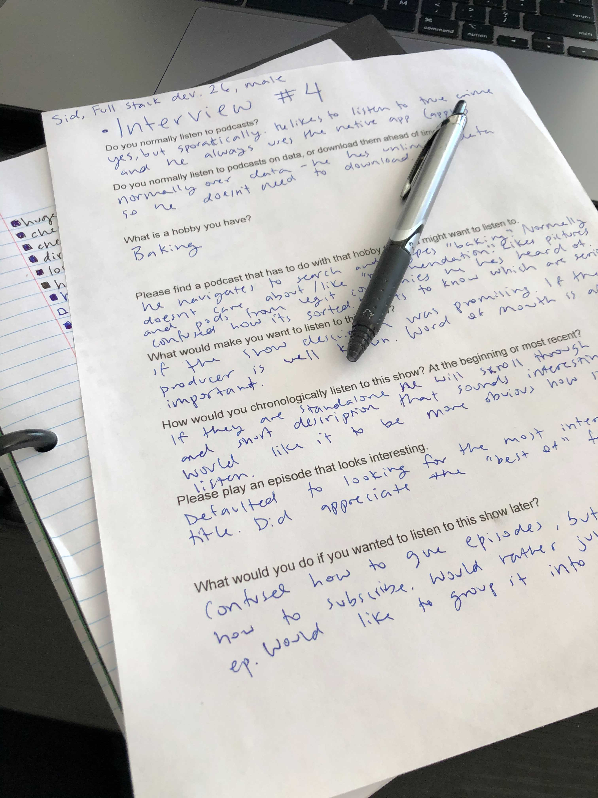
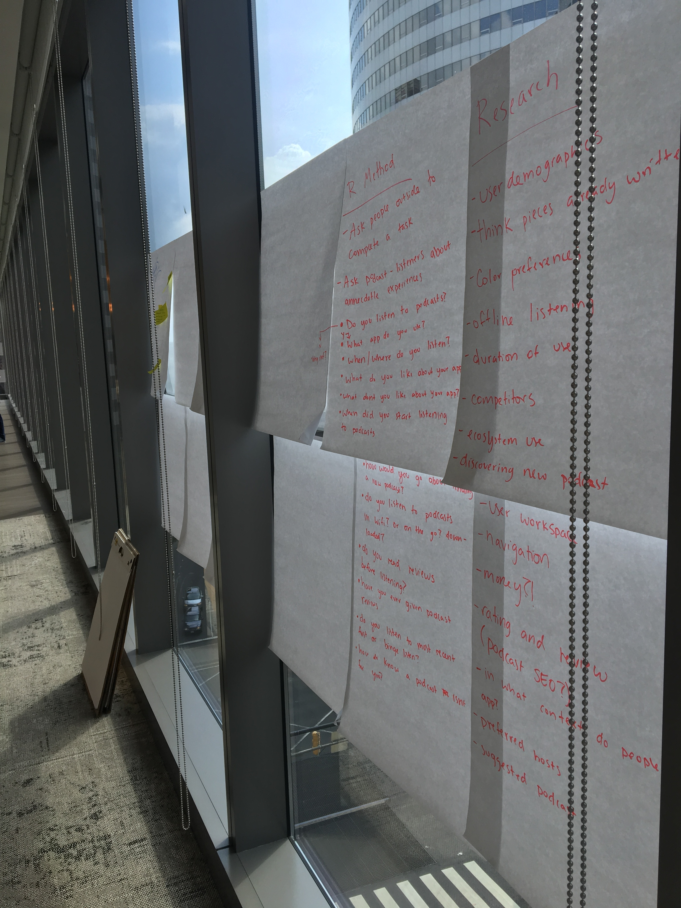
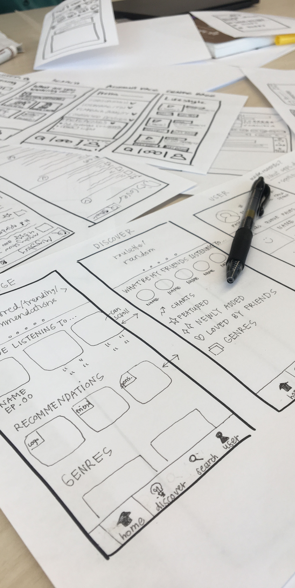

Hackathon: Podcast App
During a 24-hour hackathon, I used design thinking principles to design an app dedicated to providing the best listening experience possible to podcast fans.
TLDR: I researched, ideated, tested, iterated, retested, and refined a complete podcast listening experience with a partner designer.
- Role: Product Designer
- Software Used: Figma, Illustrator

The Process
Capterra’s software comparison table is one of its most helpful tools. However, mobile users had a difficult time interacting with the table: the horizontal scrolling and sticky elements were inaccessible.

After surveying dozens of examples and consolidating existing user feedback and data, my team conducted an ideation session to identify which features and elements were most important to surface in the new design.
After surveying dozens of examples and consolidating existing user feedback and data, my team conducted an ideation session to identify which features and elements were most important to surface in the new design.
Research Findings
We surveyed dozens of competitors, market leaders, ecommerce sites, and online marketplaces’ approaches to mobile comparisons and found no clear consensus. We used a variety of elements from these sites.



After surveying dozens of examples and consolidating existing user feedback and data, my team conducted an ideation session to identify which features and elements were most important to surface in the new design.
Users were bouncing at a high rate, and converting at a low rate.
Users were bouncing at a high rate, and converting at a low rate.
Prototyping & User Testing
When we stopped thinking about the template as a comparison “table”, and started thinking about it as a comparison “experience”, we were able to create a product that fulfilled user needs even though it looks.
Key user testing findings:
1
Users prioritize pricing information more than other.
2
Users prioritize pricing information more than other.
3
Users prioritize pricing information more than other.
4
Users prioritize pricing information more than other.
5
Users prioritize pricing information more than other.

Round One Mock Ups
We surveyed dozens of competitors, market leaders, ecommerce sites, and online marketplaces’ approaches to mobile comparisons and found no clear consensus. We used a variety of elements from these sites.


Successes
Failures
Round Two Wireframes
We surveyed dozens of competitors, market leaders, ecommerce sites, and online marketplaces’ approaches to mobile comparisons and found no clear consensus. We used a variety of elements from these sites.


After surveying dozens of examples and consolidating existing user feedback and data, my team conducted an ideation session to identify which features and elements were most important to surface in the new design.
Users were bouncing at a high rate, and converting at a low rate.
Users were bouncing at a high rate, and converting at a low rate.
Key Learnings & Next Steps
With all major usability concerns ironed out in testing, and positive feedback from users in moderated testing, the mobile comparison is in development and ready to be rolled out in Q4 2020.

The next step of this project is a subtle rearchitecture to help users better understand Capterra. For many users, this template will be their first introduction to the site. User interviews show us that for these users, it is difficult to quickly understand what Capterra does, and what other tools it has to offer. Clarifying this messaging is a key next improvement.
Next steps include:
1
Roll out AB test to 100% of traffic to verify user testing findings with large-scale traffic
2
Apply the mobile-first design to desktop and roll out a fully responsive version of the page
3
Optimize page for conversion rate and revenue
4
The page has become increasingly important for organic search results, and we will continue to optimize for SEO
5
Perform additional testing to identify more desired data points
Next Case Study 
Software Product Directory
Mobile Comparison Table
Developed with Love by Amelia Peacock 2020